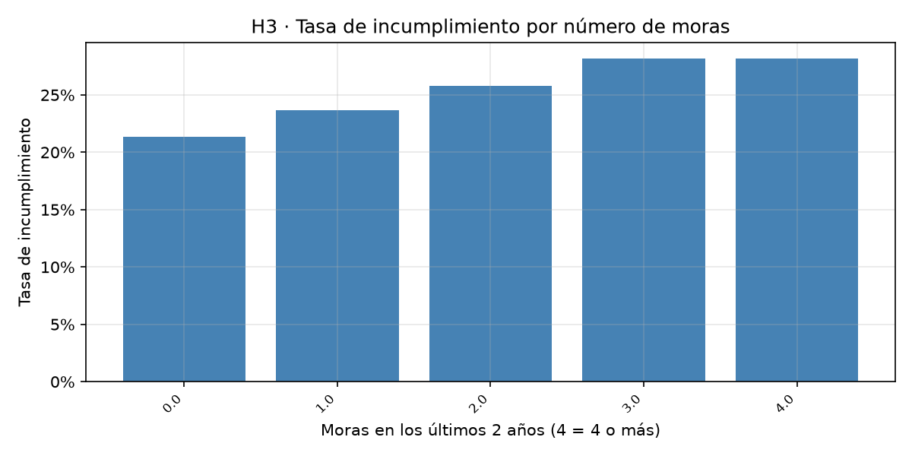
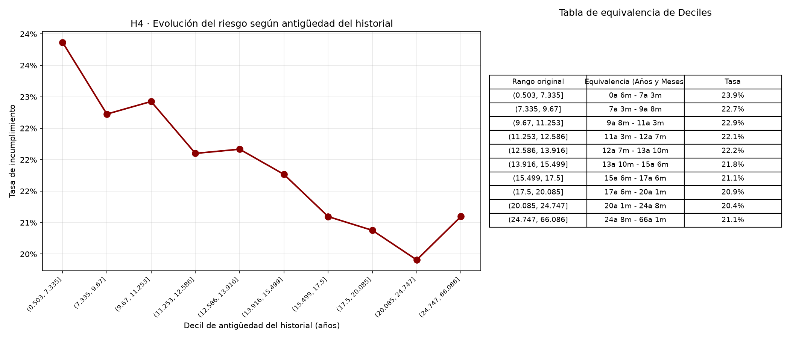
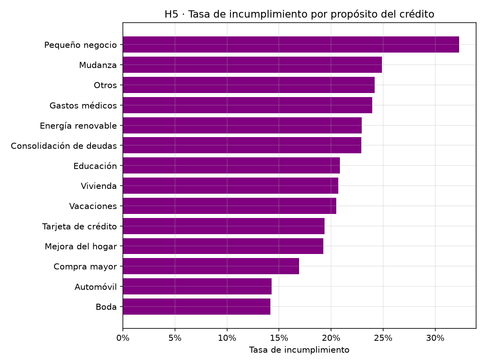

¿Aprende más la red?
El modelo neuronal guardado corresponde a la semilla 19 y alcanza AUC = 0,6827 en prueba; al promediar las 30 semillas, el AUC es 0,6805.
Trabajo académico · 2026
00 · Síntesis
El objetivo es estimar la probabilidad de que un crédito termine en incumplimiento utilizando únicamente información que estaría disponible al momento de solicitarlo. Para ello se comparan dos enfoques: una regresión logística como referencia interpretable y un perceptrón multicapa (MLP) entrenado con PyTorch.
El estudio utiliza el conjunto público de préstamos de LendingClub distribuido en Kaggle. La etiqueta se construye a partir del estado del préstamo: cumplimiento (0) o incumplimiento (1). Para el modelamiento, el preprocesamiento restringe las originaciones a fechas anteriores al 1 de enero de 2013 y separa cronológicamente entrenamiento, validación y prueba. Se excluyen los créditos sin desenlace observado y las variables que incorporan información posterior al desembolso o decisiones internas de la plataforma.
El modelo neuronal guardado corresponde a la semilla 19 y alcanza AUC = 0,6827 en prueba; al promediar las 30 semillas, el AUC es 0,6805.
Las tasas observadas cambian entre ventanas: 15,78 % en entrenamiento, 17,27 % en validación y 16,44 % en prueba.
La scorecard convierte el logit en puntos y distribuye la contribución mediante Gradientes Integrados.
La mayor complejidad de una red neuronal no garantiza una mejora robusta en datos tabulares. El modelo neuronal guardado —semilla 19, seleccionada por su AUC de validación— alcanza 0,6827 en prueba, frente a 0,6809 de la regresión logística. Sin embargo, el promedio de las 30 semillas es 0,6805, ligeramente inferior a la línea base. La conclusión depende de distinguir el modelo seleccionado del comportamiento medio de la configuración.
01 · Contexto
El riesgo de crédito es la posibilidad de que un prestatario no cumpla las obligaciones pactadas y ocasione pérdidas al prestamista. En la originación, estimar la probabilidad de incumplimiento permite apoyar decisiones de aprobación, fijación de condiciones y asignación de límites. La estimación debe utilizar información conocida antes del desembolso; de lo contrario, el modelo podría aprovechar señales que no existirían cuando se toma la decisión.
La regresión logística constituye una línea base razonable por su sencillez y facilidad de interpretación. Las redes neuronales pueden representar relaciones no lineales e interacciones, pero esa flexibilidad debe demostrar una mejora en datos no utilizados durante el entrenamiento. En datos tabulares, comparar modelos complejos con una referencia sólida es más informativo que asumir que una arquitectura más profunda será superior.
| Elemento | Definición |
|---|---|
| Usuario previsto | Área de riesgos de crédito o motor de apoyo a la decisión. |
| Decisión apoyada | Evaluar el riesgo de una solicitud y aportar información para aprobar, rechazar o establecer condiciones. |
| Momento de predicción | Originación: antes de desembolsar el crédito. |
| Información disponible | Características declaradas en la solicitud y antecedentes del reporte de crédito. |
| Variable objetivo | Indicador binario de incumplimiento derivado de loan_status. |
| Prevención de fuga | Excluir pagos, recuperaciones, calificaciones internas y demás datos posteriores a la originación. |
Objetivo general: construir y comparar modelos de regresión logística y redes neuronales para estimar la probabilidad de incumplimiento en la originación, evaluarlos con una partición cronológica y transformar la salida de la red en una scorecard interpretable.
02 · Fuente y construcción
Se utilizó el archivo loan.csv del conjunto público Credit Risk Dataset de Kaggle (ranadeep). El script de preparación construye la etiqueta, deriva variables de originación y guarda una base de modelamiento. Para este experimento, el preprocesamiento conserva únicamente créditos con issue_d anterior al 1 de enero de 2013; por tanto, el periodo analizado en los modelos llega hasta diciembre de 2012.
Cada fila representa un préstamo con etiqueta observada, después de excluir estados cuyo desenlace no está definido.
La base se recorta con FIN_DATOS = 2013-01-01 antes de la partición temporal.
La etiqueta binaria se obtiene de loan_status. La clasificación agrupa los estados de cumplimiento como cero y los estados de incumplimiento como uno.
Incluye también Does not meet the credit policy. Status:Fully Paid.
Incluye Charged Off, Default, Late (31-120 days) y su estado equivalente de la política de crédito.
Los registros Current no se etiquetan como buenos ni malos porque su resultado final no se conoce en el conjunto utilizado. Esta decisión evita asignar una etiqueta especulativa, pero también puede introducir sesgo de selección: los créditos con desenlace observado podrían no representar exactamente a todos los créditos originados.
Se retiraron atributos que no estarían disponibles al originar un crédito o que reflejan decisiones posteriores de LendingClub. Entre ellos se encuentran grade, sub_grade, int_rate, recoveries, total_pymnt y last_pymnt_amnt. También se descartaron columnas con más de 97 % de valores nulos, de acuerdo con el criterio descrito en el informe.
Un modelo puede alcanzar métricas artificialmente altas si recibe información generada después de la decisión que pretende apoyar. La evaluación sería entonces poco representativa de un escenario real de originación.
La matriz final que consumen los dos modelos contiene 38 características. El total se obtiene después de crear los cuatro ratios financieros y expandir las variables categóricas mediante One-Hot Encoding. El desglose que resulta del preprocesador es:
| Familia | Variables representativas | Tratamiento |
|---|---|---|
| Continuas (11) | loan_amnt, annual_inc, dti, revol_bal, revol_util, antiguedad_hist_anios, emp_length_anios, ratio_prestamo_ingreso, ingreso_libre, saldo_promedio_cuenta, ratio_cuentas_activas | Transformación log(1+x) para ingreso y saldo rotativo; imputación, recorte 1–99 y estandarización. |
| Conteos (5) | delinq_2yrs, inq_last_6mths, open_acc, pub_rec, total_acc | Imputación con mediana, recorte por percentiles y estandarización. |
| Indicadores (3) | term_60m, ind_mora_previa, ind_registro_publico | Variables binarias conservadas como 0/1. |
| Faltantes (1) | emp_length_nulo | Indicador creado antes de imputar la antigüedad laboral. |
| One-hot (18) | purpose (13), home_ownership (3), verification_status (2) | Se omite una categoría de referencia por cada variable categórica. |
| Total (38) | 11 + 5 + 3 + 1 + 18 | 38 columnas de entrada para ambos modelos. |
La categoría de referencia del propósito es debt_consolidation; para vivienda, MORTGAGE; y para verificación, Not Verified. Una categoría no vista durante el entrenamiento queda codificada como la referencia.
El preprocesador calcula las medianas, los percentiles de recorte y los parámetros de estandarización exclusivamente con el conjunto de entrenamiento. Después aplica esos mismos parámetros a validación y prueba. La antigüedad laboral faltante se marca con un indicador antes de imputar; el resto de continuas y conteos se imputa con la mediana. Esta separación evita que la información de los conjuntos futuros influya en el ajuste del preprocesamiento.
03 · Exploración
Antes de ajustar los modelos se formularon seis hipótesis guiadas por intuiciones de riesgo crediticio. La tasa observada de incumplimiento por partición permite comparar la composición del riesgo entre ventanas; las atribuciones de la scorecard aportan una segunda lectura, pero no deben confundirse con efectos causales.
Proporción de créditos clasificados como incumplidos en cada partición.
Escala visual máxima: 20 %. Tasas observadas consignadas en t4_semillas.csv; las tres particiones se forman con los cortes temporales del preprocesador.
| Hipótesis | Factor | Dirección esperada |
|---|---|---|
| H1 | Relación deuda-ingreso (dti) | Mayor DTI → mayor riesgo. |
| H2 | Ingreso anual (annual_inc) | Mayor ingreso → menor riesgo. |
| H3 | Morosidad previa (delinq_2yrs e indicador asociado) | Más moras → mayor riesgo futuro. |
| H4 | Antigüedad del historial crediticio | Historial más largo → menor riesgo. |
| H5 | Propósito del crédito (purpose) | El perfil de riesgo difiere según el uso. |
| H6 | Tenencia de vivienda (home_ownership) | Se esperaba RENT > MORTGAGE > OWN en riesgo. |
La lectura cuantitativa de estas hipótesis se amplía en la sección de scorecard a partir de los resultados de Gradientes Integrados. Es importante distinguir entre una dirección de atribución observada en el conjunto de prueba y una relación causal: el modelo aprende asociaciones condicionadas por las demás variables incluidas.
A continuación se presentan los resultados del análisis exploratorio de datos (EDA) realizado sobre los 268.530 créditos, los cuales contrastan los supuestos teóricos con el comportamiento real de la cartera.
Relación entre la deuda (DTI) y la tasa de incumplimiento, agrupada por deciles.

La gráfica confirma que mientras más deudas tenga una persona en relación con su sueldo (DTI), más difícil le será pagar un nuevo crédito. Los datos forman una escalera perfecta: el grupo de personas con casi cero deudas tiene una tasa de impago del 14,9%, pero el grupo de personas altamente endeudadas se dispara al 33,9%. Es decir, el riesgo se duplica.
¿Qué significa esto para el negocio?
Significa que el nivel de deuda es la primera gran señal de alerta. Si una persona ya está comprometiendo gran parte de su sueldo en otras deudas, el sistema debería rechazar su solicitud o prestarle menos dinero. Es mejor prevenir que lamentar: un cliente que llega muy endeudado tiene el doble de probabilidades de no pagar.
Curvas de densidad del ingreso anual para clientes que pagan y los que incumplen.

Las dos curvas (verde para los que pagan, roja para los que no) nos dicen que ganar más dinero te protege del impago. La curva roja está concentrada en sueldos bajos (alrededor de $45,000), mientras que la verde se estira hacia sueldos más altos. Al comparar los extremos, la tasa de impago cae del 28,1% (sueldos bajos) al 16,2% (sueldos altos).
¿Qué significa esto para el negocio?
Un buen sueldo da tranquilidad, pero no lo es todo. Alguien que gana bien pero gasta mucho sigue siendo un riesgo. Para la plataforma, esto permite crear "vías rápidas" para clientes con ingresos altos (aprobaciones exprés y mejores tasas). A los que ganan menos, no hay que decirles "no" de inmediato; se les puede prestar montos más pequeños para que puedan pagar cómodamente.
Comportamiento del riesgo según la morosidad registrada en los últimos 2 años.

La gráfica nos dice que los clientes con moras recientes son más propensos a incumplir. La tasa de impago sube desde un 21,4% para los que no tienen moras, hasta un 28,2% para los que tienen 4 o más. Sin embargo, el salto no es enorme; la diferencia entre tener 3 o 4 moras es casi nula.
¿Qué significa esto para el negocio?
Si alguien está en la lista de morosos, el banco debe prender las alarmas, pero no necesariamente rechazarlo de tajo. Lo inteligente es investigar por qué se atrasó: ¿perdió el empleo? ¿Fue un olvido? Si su situación actual ha mejorado, podría aprobársele un crédito con un límite más bajo o con una tasa de interés un poco más alta para compensar el riesgo extra.
Relación entre los años de historial crediticio y el incumplimiento por deciles.

La creencia popular dice que "el que tiene más años en el sistema bancario es más confiable". La gráfica demuestra que eso es solo un poco cierto. El grupo con menos de 7 años de historial tiene un riesgo del 23,9%, y los veteranos (más de 24 años) bajan al 21,1%. Solo hay una diferencia de 2,8 puntos, y la línea ni siquiera baja de forma constante (tiene altibajos).
¿Qué significa esto para el negocio?
Tener un historial largo no te hace inmune a no pagar, ni tener un historial corto te condena. Para la plataforma, fijarse solo en la antigüedad es una mala estrategia. Es mucho más importante evaluar la deuda actual (H1) y los ingresos (H2) que simplemente mirar cuántos años lleva la persona usando tarjetas de crédito.
Riesgo asociado al uso que el cliente le dará al préstamo.

El propósito del crédito cambia radicalmente el riesgo. Financiar una boda o un automóvil tiene las tasas de impago más bajas (alrededor del 14,2%), mientras que pedir dinero para un pequeño negocio es lo más riesgoso (supera el 32,3%). También hay riesgos altos en gastos médicos o mudanzas.
¿Qué significa esto para el negocio?
No se puede tratar a todos los clientes por igual. Si alguien pide un préstamo para un negocio, la plataforma debe cobrarle una tasa de interés más alta (porque hay más riesgo de que quiebre) o pedirle garantías. Si pide dinero para un carro o una boda, se le pueden ofrecer condiciones más favorables.
Impacto de la tenencia de vivienda en la probabilidad de impago.

Aquí nos llevamos una gran sorpresa. Creíamos que los dueños de casa propia eran los más seguros, pero los datos dicen lo contrario. El orden real de riesgo es: arrendatarios (24,4%), seguidos de dueños sin hipoteca (23,0%), y los más seguros son los que tienen hipoteca (19,6%).
¿Qué significa esto para el negocio?
Tener una hipoteca es una señal de formalidad. Para que un banco te preste para una casa, ya te hizo un estudio profundo. Además, sabes que si no pagas, pierdes tu hogar. En cambio, los arrendatarios o los dueños sin hipoteca no tienen ese "filtro" previo. La plataforma debería confiar más en los hipotecados y ser más cuidadosa con los arrendatarios, evaluando bien sus ingresos antes de prestarles.
04 · Preparación de datos
La preparación se ejecuta mediante un único preprocesador compartido por la regresión logística, la red neuronal y la scorecard. De esta manera, los modelos reciben las mismas columnas, generadas con los mismos criterios y sin ajustar estadísticas sobre datos posteriores.
Aplicar log(1+x) a ingreso y saldo rotativo; completar valores numéricos faltantes con medianas aprendidas en entrenamiento.
Recortar las variables numéricas en los percentiles 1 y 99 y estandarizar con media y desviación del entrenamiento.
Crear indicadores one-hot y conservar los campos binarios ya construidos.
La variable issue_d determina los cortes. En lugar de mezclar aleatoriamente créditos de diferentes años, el procedimiento simula un despliegue: aprender del pasado, seleccionar con un periodo posterior y medir finalmente en un periodo aún más reciente.
| Conjunto | Regla temporal | Tasa de incumplimiento observada |
|---|---|---|
| Entrenamiento | issue_d < 2012-01-01 (hasta dic. 2011) | 15,78 % |
| Validación | 01 ene. – 30 jun. 2012 | 17,27 % |
| Prueba | 01 jul. – 31 dic. 2012 | 16,44 % |
La prevalencia de incumplimiento aumenta entre particiones. Puede reflejar cambios en la población, condiciones de originación y condiciones económicas, además del efecto de excluir préstamos sin desenlace observado. Por ello, una misma puntuación o probabilidad puede no conservar su interpretación temporal sin monitoreo y recalibración.
05 · Marco matemático
La regresión logística transforma una combinación lineal de las características en una probabilidad entre cero y uno. El modelo estima el logit de la clase positiva, que en este trabajo representa el incumplimiento:
La regularización Ridge penaliza coeficientes de gran magnitud. En regresion_logistica.py se evaluaron diez valores de C y se seleccionó C = 0,01668 por su menor pérdida de validación. En scikit-learn, un valor menor de C implica una regularización más fuerte.
La configuración ganadora registrada en t4_busqueda.csv tiene una sola capa oculta de 32 neuronas y utiliza Tanh. La búsqueda parte de ReLU como activación inicial, pero la alternativa Tanh obtuvo una menor pérdida de validación y pasó a ser la configuración seleccionada.
La cuenta de parámetros entrenables es (38 × 32 + 32) + (32 × 1 + 1) = 1.281. Los términos adicionales corresponden a los sesgos de las capas densa oculta y de salida; Tanh y Dropout no agregan parámetros entrenables.
Para cada crédito, la etiqueta se modela como una variable Bernoulli con probabilidad de incumplimiento \(p_i\). La función objetivo es la entropía cruzada binaria, equivalente al negativo del logaritmo de la verosimilitud:
En PyTorch se emplea BCEWithLogitsLoss, que combina internamente la operación de sigmoide con la entropía cruzada para mejorar la estabilidad numérica.
La retropropagación aplica la regla de la cadena para obtener el gradiente de la pérdida respecto a cada peso y sesgo. Para una salida logística y entropía cruzada binaria, el error de salida se expresa como la diferencia entre la probabilidad predicha y la etiqueta:
En la red, Dropout desactiva aleatoriamente una fracción de las activaciones durante el entrenamiento. La configuración seleccionada utiliza Adam con tasa de aprendizaje 0,003, Dropout 0,1 y penalización L2 implementada como weight_decay = 0,0001. La activación Tanh introduce la no linealidad en la única capa oculta.
06 · Diseño experimental
Se evaluaron diez valores de regularización y se seleccionó C = 0,01668 por su pérdida de validación. La matriz contiene 38 características, por lo que la regresión logística tiene 39 parámetros: 38 coeficientes y un intercepto. El valor también puede expresarse aproximadamente como una intensidad de penalización inversa de 1/C ≈ 59,95.
La búsqueda se organizó por etapas: se varió un hiperparámetro a la vez, conservando la mejor configuración encontrada en cada etapa. El archivo t4_busqueda.csv contiene 12 configuraciones evaluadas con tres semillas cada una. El criterio de selección fue la menor pérdida de validación promedio. La configuración ganadora fue:
| Hiperparámetro | Valor seleccionado |
|---|---|
| Capas ocultas | [32] |
| Activación | Tanh |
| Dropout | 0,10 |
| Optimizador | Adam |
| Tasa de aprendizaje | 0,003 |
Penalización L2 (weight_decay) | 0,0001 |
| Parámetros entrenables | 1.281 |
| Pérdida de validación promedio | 0,42130 |
La red se entrena con mini-lotes de 256 observaciones, un máximo de 60 épocas y parada temprana con paciencia de 10 épocas sin mejora de la pérdida de validación. Una vez seleccionados los hiperparámetros, se realizan 30 entrenamientos finales con semillas 0 a 29. El script conserva el modelo de la semilla con mejor AUC de validación; por separado, registra las métricas de las 30 semillas para cuantificar la variabilidad.
3 semillas por configuración; selección por pérdida de validación media.
Entrenamientos finales con la configuración seleccionada.
Mini-lote de 256, máximo 60 épocas y paciencia 10.
Los dos modelos usan las mismas 38 columnas y la misma partición temporal. El entrenamiento contiene originaciones anteriores a enero de 2012; la validación comprende enero–junio de 2012 y la prueba julio–diciembre de 2012. La prueba no interviene en la selección de hiperparámetros ni en la parada temprana.
07 · Evidencia cuantitativa
El script entrena la configuración seleccionada con 30 semillas, registra las métricas de cada inicialización en t4_semillas.csv y guarda como modelo final la red con mayor AUC de validación. Por eso se distinguen dos resultados: el del modelo guardado (semilla 19) y el promedio de las 30 semillas. La prueba no se utiliza para elegir la semilla.
Para la regresión logística se reporta la evaluación de t3_resumen.csv. Para la MLP se presenta tanto el resultado de la semilla 19 —la que el script conserva por alcanzar el mayor AUC de validación— como la media de las 30 semillas de t4_semillas.csv.
| Modelo | AUC de prueba | Desv. estándar | Mínimo | Máximo |
|---|---|---|---|---|
| Regresión logística | 0,6809 | — | 0,6809 | 0,6809 |
| MLP guardada · semilla 19 | 0,6827 | — | 0,6827 | 0,6827 |
| MLP · media de 30 semillas | 0,6805 | 0,0027 | 0,6733 | 0,6848 |
La MLP muestra el promedio de 30 entrenamientos.
La diferencia entre la media de la MLP y la regresión logística es de aproximadamente −0,0004 puntos de AUC.
Rango del AUC observado en las 30 semillas.
Desviación estándar muestral: 0,0027. La dispersión entre inicializaciones es mayor que la diferencia entre las medias de ambos modelos.
La MLP guardada obtiene AUC = 0,6827 en prueba, una diferencia de aproximadamente +0,0018 frente a la regresión logística (0,6809). No obstante, el promedio de las 30 semillas es 0,6805 (−0,0004 frente a la logística), con desviación estándar de 0,0027. La ventaja del modelo guardado es pequeña y no demuestra por sí sola una superioridad generalizable. Para afirmar significancia o equivalencia se necesitaría un contraste formal, por ejemplo intervalos de confianza o una prueba pareada sobre predicciones.
En la partición de prueba, t3_resumen.csv reporta Gini = 0,3618, KS = 0,2585 y Brier = 0,1285 para la regresión logística. El archivo de comparación consolidado que produciría comparar.py no está versionado en la rama consultada; por eso no atribuyo cifras de KS o Brier a la media de las 30 redes sin calcularlas desde sus registros.
Evalúa la capacidad de ordenar un crédito incumplido por encima de uno cumplido. 0,5 equivale al azar; 1 representa separación perfecta.
Es la máxima distancia entre las distribuciones acumuladas de puntuaciones de ambas clases.
Gini = 2·AUC − 1. Brier mide el error cuadrático medio entre probabilidades predichas y resultados observados.
En prueba, la tasa observada de incumplimiento es 16,44 %. En los registros de las 30 semillas de la MLP, la probabilidad media por semilla promedia aproximadamente 15,76 %. Esta diferencia sugiere cierta subestimación del nivel medio de riesgo en esa partición; no reemplaza una curva de calibración por deciles ni una evaluación de calibración completa.
08 · Interpretabilidad
La red produce un logit que puede transformarse en un puntaje de crédito. La convención adoptada es que más puntos representan menor riesgo. Para explicar por qué una persona obtiene un puntaje particular, se emplean Gradientes Integrados respecto al perfil promedio del conjunto de entrenamiento.
Conversión entre probabilidad de incumplimiento y puntaje
Escala utilizada: 600 puntos con odds de referencia 5:1 y PDO = 20.
PDO (Points to Double the Odds) indica cuántos puntos se necesitan para duplicar las odds de buenos frente a malos. Con esta escala, sumar 20 puntos duplica esas odds; no significa que la probabilidad de incumplimiento se reduzca exactamente a la mitad.
El método compara el perfil evaluado \(\mathbf{x}\) con un perfil de referencia \(\mathbf{x}_{ref}\), que en la implementación corresponde al promedio de las características del conjunto de entrenamiento. Integra el gradiente de la salida a lo largo del camino entre ambos perfiles:
La implementación aproxima la integral con 50 pasos y utiliza el signo negativo al convertir contribuciones del logit en puntos. Así, la suma de las contribuciones por variable, más el puntaje base del perfil de referencia, reconstruye el puntaje del modelo hasta el error numérico de la aproximación.
La tabla siguiente ordena las variables por el promedio del valor absoluto de los puntos atribuidos en la prueba. La columna de dirección resume la correlación entre el valor de la característica y los puntos que recibe: una correlación negativa indica que valores más altos suelen asociarse con una reducción del puntaje.
Diez variables con mayor magnitud media de atribución en la prueba.
El impacto medio absoluto mide cuánto se mueve el puntaje en promedio; no indica por sí solo si la variable aumenta o reduce el puntaje.
| Variable | Impacto medio absoluto | Correlación con puntos | Lectura descriptiva |
|---|---|---|---|
revol_util | 9,7504 | −0,9940 | Mayor utilización del crédito rotativo se asocia con menos puntos. |
term_60m | 8,8711 | −0,9977 | El plazo de 60 meses se asocia con una reducción del puntaje. |
inq_last_6mths | 5,6913 | −0,9926 | Más consultas recientes se asocian con menos puntos. |
annual_inc | 4,1920 | +0,9735 | Mayores ingresos se asocian con más puntos. |
ratio_prestamo_ingreso | 3,7788 | −0,9788 | Una mayor proporción préstamo-ingreso se asocia con menos puntos. |
ind_mora_previa | 2,7738 | −0,9806 | El indicador de mora previa se asocia con menos puntos. |
ratio_cuentas_activas | 2,4708 | −0,9561 | Valores mayores del ratio se asocian con menos puntos. |
emp_length_anios | 2,4663 | −0,9240 | La dirección de esta atribución es negativa. |
purpose_credit_card | 2,4280 | +0,9979 | La categoría tarjeta de crédito se asocia con más puntos frente a la referencia. |
ingreso_libre | 2,1687 | +0,6972 | Mayor ingreso libre estimado tiende a aportar puntos. |
dti presenta impacto medio absoluto de 0,9433 puntos y correlación −0,7091 con los puntos. La dirección es compatible con mayor riesgo a mayor endeudamiento, aunque el impacto es moderado.
annual_inc presenta impacto medio absoluto de 4,1920 puntos y correlación +0,9735. En la atribución, mayores ingresos se asocian con más puntos y, por tanto, menor riesgo.
ind_mora_previa tiene impacto de 2,7738 puntos y dirección −0,9806; delinq_2yrs también presenta dirección negativa (−0,9612). Ambas señales son compatibles con mayor riesgo ante antecedentes de mora.
antiguedad_hist_anios tiene impacto medio absoluto de 1,1660 puntos y correlación positiva de 0,4420. La dirección es compatible con la hipótesis, aunque su efecto atribuido es menor que el de las variables principales.
Las categorías presentan direcciones distintas. purpose_credit_card se asocia con más puntos (dirección +0,9979), mientras que purpose_small_business se asocia con menos puntos (−0,9989). La hipótesis de heterogeneidad recibe apoyo.
home_ownership_RENT presenta dirección negativa (−0,6252), mientras que home_ownership_OWN presenta dirección positiva (+0,5391). El patrón coincide en términos generales con la expectativa, pero los impactos son pequeños: 0,3676 y 0,1758 puntos, respectivamente.
La columna de dirección del archivo de resultados es la correlación entre una característica y los puntos atribuidos a esa característica. No equivale a un coeficiente causal. En indicadores categóricos, la lectura es relativa a la codificación one-hot y a la categoría de referencia; una conclusión de negocio necesita comparar perfiles y distribuciones, no interpretar una correlación aislada como regla universal.
09 · Interpretación crítica
La muestra procede de una plataforma estadounidense y el experimento limita las originaciones a las anteriores a enero de 2013. No representa automáticamente el mercado colombiano ni las condiciones actuales.
Excluir préstamos Current evita etiquetar resultados desconocidos, pero la selección de créditos con desenlace terminal puede sesgar la muestra.
La probabilidad media estimada queda por debajo de la tasa observada en prueba. La calibración necesita análisis y seguimiento específico.
Los Gradientes Integrados explican la salida del modelo con respecto a una referencia; no identifican causas ni sustituyen una evaluación de equidad.
La dispersión entre semillas de la red muestra que una sola inicialización no basta para caracterizar su desempeño esperado.
No se reporta una evaluación independiente en otra entidad, país o una ventana temporal externa a la partición histórica utilizada.
Serían necesarios datos recientes y representativos, validación externa, seguimiento de deriva, pruebas de calibración, análisis de equidad y revisión jurídica y de gobierno de modelos. El resultado académico no debe utilizarse para aprobar o negar créditos reales.
10 · Herramientas
La IA se utilizó como apoyo para explorar implementaciones y comprender métodos. Las sugerencias se incorporaron después de revisar su pertinencia frente a los datos, las métricas y los fundamentos del proyecto. La herramienta no sustituye la comprobación experimental ni la responsabilidad del equipo sobre el código y las conclusiones.
| # | Consulta / tarea | Herramienta | Apoyo obtenido | Revisión realizada |
|---|---|---|---|---|
| 1 | Programar una búsqueda aleatoria de arquitecturas y evaluar el modelo. | Gemini | Propuesta de código para búsqueda de hiperparámetros y parada temprana. | Se contrastaron las configuraciones con las pérdidas de validación y los resultados sobre las particiones. |
| 2 | Explicar el método de Gradientes Integrados. | Gemini | Descomposición de la salida de la red en contribuciones por variable. | Se revisó la referencia utilizada, la propiedad de completitud y la conversión de logit a puntos. |
11 · Verificación
La suposición que se puso a prueba fue que una red neuronal debía superar ampliamente a la regresión logística por ser un modelo más complejo. El modelo guardado, correspondiente a la semilla 19 seleccionada por AUC de validación, obtiene 0,6827 en prueba frente a 0,6809 de la logística. Sin embargo, la media de las 30 semillas es 0,6805 y queda ligeramente por debajo de la línea base. Una realización favorable no basta para afirmar una mejora robusta.
La verificación del experimento muestra por qué no basta con comparar una cifra aislada: hay que identificar la rama, la configuración seleccionada, el corte temporal y si el resultado corresponde a una sola inicialización o al promedio de varias. En develop, la MLP parte de ReLU en la búsqueda, pero la configuración seleccionada termina usando Tanh; confundir la configuración inicial con la ganadora cambia la descripción del modelo.
Una métrica alta no valida por sí sola un modelo. Es necesario revisar cuándo se genera cada variable, cómo se divide la muestra, qué población representa la prueba y si los resultados se mantienen al cambiar la semilla de entrenamiento.
12 · Cierre
13 · Fuentes